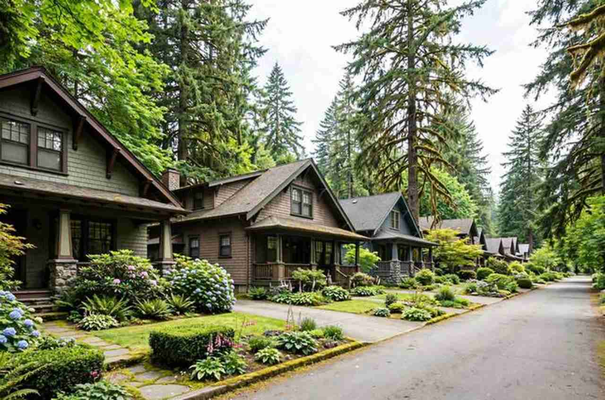

Rodent Control · Cascade Locks, OR
Same-Day Rodent Control in Cascade Locks, OR
Rats in the attic or mice in the kitchen in Cascade Locks? Murvo provides same-day rodent control with local crews who inspect first, remove the animals already inside, and seal the entry points they used. Every job is quoted flat-rate in writing before work begins and backed by a written guarantee, covering homes and businesses across Hood River County. From Hood River, Parkdale, Mount Hood to every corner of Hood River County, 1 ZIP codes are covered by local Murvo crews.
24/7Availability
1ZIP codes covered
Same-dayResponse
Licensed · Upfront options · Written guarantees · Fully insured
Cascade Locks at a glance
Local Rodent Control for Cascade Locks, OR.
Hood River County
Countynorthern Oregon
RegionGresham · 30 mi
Nearest metro76 miles northeast of Salem
From Salem1
ZIP codes covered Service by service in Cascade Locks
Rodent Control Services Available in Cascade Locks
Rodent-only specialists serving Cascade Locks and Hood River County. Every service below is explained in local terms - the species involved, the entry points that matter in Craftsman and older single-family homes with crawlspaces, hillside homes, and waterfront properties, and the seasonal timing that decides whether a fix lasts.
- 01Rodent Control↗
- 02Rodent Inspection↗
- 03Rodent Removal↗
- 04Rodent Exclusion↗
- 05Rodent Proofing↗
- 06Rat Control↗
- 07Mice Control↗
- 08Mouse Removal↗
- 09Rat Removal↗
- 10Rodent Trapping↗
- 11Rodent Baiting↗
- 12Rodenticide Application↗
- 13Attic Rodent Removal↗
- 14Crawl Space Rodent Removal↗
- 15Wall Rodent Removal↗
- 16Kitchen Rodent Control↗
- 17Garage Rodent Control↗
- 18Commercial Rodent Control↗
- 19Residential Rodent Control↗
- 20Emergency Rodent Removal↗
- 21Same-Day Rodent Control↗
- 22Rodent Damage Repair↗
- 23Rodent Waste Cleanup↗
- 24Rodent Disinfection↗
- 25Rodent Odor Removal↗
- 26Dead Rodent Removal↗
- 27Rodent Dropping Cleanup↗
- 28Rodent Exclusion for Roofs↗
- 29Rodent Exclusion for Vents↗
- 30Rodent Exclusion for Chimneys↗
Rodent Control in Cascade Locks
Rodent Control in Cascade Locks
A single mouse sighting in a Cascade Locks kitchen rarely means a single mouse. Rodents breed fast, contaminate food areas, and gnaw wiring long before the damage is obvious. Murvo responds with same-day appointments where available, a background-checked local crew, and a coordinated program of trapping, exclusion, cleanup guidance, and monitoring that keeps working after the first visit ends.
Homeowners in Cascade Locks call Murvo for rodent control because the problem here is specific: Norway rat (Rattus norvegicus) pressure around Craftsman and older single-family homes with crawlspaces, hillside homes, and waterfront properties, tight access at crawlspace vents and access doors, foundation gaps, sewer laterals, and gaps under doors and around utility lines, and activity that follows the local season. Our Hood River County crews diagnose the real source before recommending work, explain the options in plain language, and quote one flat rate in writing. Across Cascade Locks - including Odell, Hood River - every visit is backed by licensed, insured technicians and our written workmanship guarantee. Coverage for rodent control spans 1 ZIP codes in Hood River County, including 97014.
In most of Cascade Locks, we can offer a same-day appointment for rodent control, and our lines are open 24/7 for urgent cases like scratching in the walls or a rodent in a living area. Your technician inspects first, explains the plan, and quotes a flat rate in writing before any work begins, so help starts fast without surprises. In Hood River County, activity follows the local season, so timing the work matters as much as the method.
The honest answer is that it depends on species, activity level, and how much sealing your home needs, which is why Murvo inspects first and then gives you a flat-rate quote in writing. For national context only, Angi's 2026 data averages rat and mouse removal and control at $396, typically $189 to $655; that is not a Murvo price, and your written quote is the figure you pay.
Rodent Inspection in Cascade Locks
Rodent Inspection in Cascade Locks
Most Cascade Locks inspections start with uncertainty: a noise, a smell, a few droppings that might be old. Murvo turns that uncertainty into a written record. A rodent inspection checks attic, crawl space, roofline, and foundation, photographs the evidence, and ends with a flat-rate written quote for anything worth fixing.
Homeowners in Cascade Locks call Murvo for rodent inspection because the problem here is specific: Norway rat (Rattus norvegicus) pressure around Craftsman and older single-family homes with crawlspaces, hillside homes, and waterfront properties, tight access at crawlspace vents and access doors, foundation gaps, sewer laterals, and gaps under doors and around utility lines, and activity that follows the local season. Our Hood River County crews diagnose the real source before recommending work, explain the options in plain language, and quote one flat rate in writing. Across Cascade Locks - including Odell, Hood River - every visit is backed by licensed, insured technicians and our written workmanship guarantee. Homes near Hood River tend to show activity first in Cascade Locks, which is why inspections start with crawlspace vents and access doors, foundation gaps, sewer laterals, and gaps under doors and around utility lines.
You do not have to wait days for answers in Cascade Locks. Same-day rodent inspection appointments are available in most areas, urgent calls are taken 24/7, and most home inspections take under an hour. You finish the visit with photos, written findings, and flat-rate pricing for anything we recommend. If you are seeing signs now, an inspection this week is the fastest way to know which situation you are in.
Nationally, a professional rodent inspection typically runs $100 to $200 according to Angi's 2026 data, and it is often credited toward the job if you proceed. Murvo confirms your exact rodent inspection price before the visit and quotes any follow-up work as a flat rate in writing after inspection, so the figure you approve is the figure you pay, with no hourly billing.
Rodent Removal in Cascade Locks
Rodent Removal in Cascade Locks
A removal visit should solve a health concern, not create one. Murvo technicians wear protective equipment, bag and remove contaminated material safely, and keep children and pets away from working areas. We explain each stage in plain language, confirm when rooms are safe to use again, and back the finished job with a written workmanship guarantee.
In Cascade Locks, rodent removal is not a generic spray-and-go service. Rodents exploit crawlspace vents and access doors, foundation gaps, sewer laterals, and gaps under doors and around utility lines in Craftsman and older single-family homes with crawlspaces, hillside homes, and waterfront properties, and a fix that ignores those routes does not last. Murvo's Cascade Locks team inspects first, shows you the evidence - droppings, gnaw marks, entry gaps - and then lays out the work with a flat-rate written quote. We serve all of Hood River County from Cascade Locks, including Odell, Hood River, and every job is covered by our written workmanship guarantee. Around Hood River, Parkdale, Mount Hood, the pattern is similar: House mouse (Mus musculus) finds crawlspace vents and access doors, foundation gaps, sewer laterals, and gaps under doors and around utility lines first, and lasting rodent removal has to close those routes.
For active infestations in Cascade Locks, rodent removal can usually start the same day you call, and our team answers 24/7 when a rodent is loose in a living area. The first visit confirms activity and sets traps straight away; return visits then clear and reset them until monitoring shows the property is completely clear. Murvo's Cascade Locks crews explain the finding either way, and the flat-rate quote leaves the decision with you.
Cost depends on the species, how many animals are active, and how much sealing the home needs afterwards, so Murvo inspects first and quotes one flat rate in writing. For national context only, Angi's 2026 data averages rat and mouse removal at $396, typically $189 to $655. That benchmark is not a Murvo price; your written quote is the exact figure.
Rodent Exclusion in Cascade Locks
Rodent Exclusion in Cascade Locks
Rats can pass through a hole the size of a quarter, and mice through one far smaller, which is why Craftsman and older single-family homes with crawlspaces, hillside homes, and waterfront properties in Cascade Locks hide so many working entry points around crawlspace vents and access doors, foundation gaps, sewer laterals, and gaps under doors and around utility lines. Our technicians inspect soffits, eaves, pipe entries, foundation cracks, and door sweeps in detail, then prioritize the openings that matter most for Norway rat (Rattus norvegicus) and House mouse (Mus musculus) locally.
Homeowners in Cascade Locks call Murvo for rodent exclusion because the problem here is specific: Norway rat (Rattus norvegicus) pressure around Craftsman and older single-family homes with crawlspaces, hillside homes, and waterfront properties, tight access at crawlspace vents and access doors, foundation gaps, sewer laterals, and gaps under doors and around utility lines, and activity that follows the local season. Our Hood River County crews diagnose the real source before recommending work, explain the options in plain language, and quote one flat rate in writing. Across Cascade Locks - including Odell, Hood River - every visit is backed by licensed, insured technicians and our written workmanship guarantee. The Cascade Locks crews who handle rodent exclusion also handle the follow-through - proofing, cleanup, and monitoring - so one visit can close the whole problem.
Rodent exclusion in Cascade Locks usually starts with a survey visit we can often schedule the same day you call. Sealing itself is booked as soon as any active animals are cleared, because nothing is sealed inside. Most homes are fully sealed within days, not weeks, and urgent entry points near wiring or food areas are prioritized first. The written quote for your Cascade Locks property will spell out exactly which of these applies before any work starts.
For national context, Angi's 2026 data puts basic exclusion at $200 to $600, depending on access and the number of openings. That is a benchmark, not a Murvo price. After surveying your Cascade Locks home, we list every opening that needs sealing and quote one flat rate in writing, so you pay for the work your property actually needs and nothing more.
Rodent Proofing in Cascade Locks
Rodent Proofing in Cascade Locks
In Craftsman and older single-family homes with crawlspaces, hillside homes, and waterfront properties, prevention is a checklist hiding in plain sight: light under doors, unscreened vents, branches touching the roof, and clutter against walls near crawlspace vents and access doors, foundation gaps, sewer laterals, and gaps under doors and around utility lines. Murvo works through that checklist across Hood River County properties, separating simple homeowner fixes from specialist sealing, so money goes only where professional materials genuinely help.
When you need rodent proofing in Cascade Locks, the job starts with what is actually happening in your part of Hood River County. Murvo crews work Cascade Locks every week, so they know how Norway rat (Rattus norvegicus) and House mouse (Mus musculus) behave around Craftsman and older single-family homes with crawlspaces, hillside homes, and waterfront properties here - and where they get in: crawlspace vents and access doors, foundation gaps, sewer laterals, and gaps under doors and around utility lines. We arrive equipped for the full job, confirm the flat rate in writing before work begins, and cover the whole Cascade Locks area, including Odell, Hood River. No call-center runaround and no open-ended hourly billing - just a local crew, a clear plan, and a written quote you approve first. Homes near Hood River tend to show activity first in Cascade Locks, which is why inspections start with crawlspace vents and access doors, foundation gaps, sewer laterals, and gaps under doors and around utility lines.
Rodent proofing is preventive, so there is rarely a rush, but surveys in Cascade Locks can often be arranged the same day you call, and always within a few days. Most proofing work is completed in a single visit once you approve the plan, and booking before colder weather gives your home protection ahead of the seasonal rush indoors. If you are seeing signs now, an inspection this week is the fastest way to know which situation you are in.
We survey your Cascade Locks property first, separate the quick wins you can handle yourself from the specialist sealing, and quote the professional work as one flat rate in writing so spending can be staged. Angi's 2026 national context puts exclusion, the core of proofing, at $200 to $600 for basic work — a benchmark only, not a Murvo price.
Rat Control in Cascade Locks
Rat Control in Cascade Locks
What separates control from a temporary lull? Monitoring that continues after the last catch. Murvo keeps checking until routes stay quiet, removes trapped rats hygienically, and finishes with exclusion so replacements cannot follow the same path. Licensed, insured technicians document every visit, and urgent calls are answered 24/7.
In Cascade Locks, rat control is not a generic spray-and-go service. Rodents exploit crawlspace vents and access doors, foundation gaps, sewer laterals, and gaps under doors and around utility lines in Craftsman and older single-family homes with crawlspaces, hillside homes, and waterfront properties, and a fix that ignores those routes does not last. Murvo's Cascade Locks team inspects first, shows you the evidence - droppings, gnaw marks, entry gaps - and then lays out the work with a flat-rate written quote. We serve all of Hood River County from Cascade Locks, including Odell, Hood River, and every job is covered by our written workmanship guarantee. In Cascade Locks, rat control calls most often involve Craftsman and older single-family homes with crawlspaces, hillside homes, and waterfront properties, where crawlspace vents and access doors, foundation gaps, sewer laterals, and gaps under doors and around utility lines decide whether the fix holds.
Rats do not wait, and neither do we: rat control in Cascade Locks can usually start with a same-day inspection, and urgent calls are answered 24/7. Pre-baiting begins on the first visit once you approve the written quote, traps are set as soon as rats are feeding confidently, and scheduled checks keep the program moving until activity stops. Murvo's Cascade Locks crews explain the finding either way, and the flat-rate quote leaves the decision with you.
Species, colony size, and the number of entry points to seal all affect rat work, which is why Murvo inspects first and quotes one flat rate in writing. Angi's 2026 figures, given for national context only, average rat control and removal at $396 and typically run $189 to $655; the written quote for your Cascade Locks home is the exact price.
Mice Control in Cascade Locks
Mice Control in Cascade Locks
One mouse seen in a Cascade Locks kitchen usually means more are nesting unseen, and mice breed quickly enough that a small problem becomes a large one within weeks. Murvo offers same-day appointments where available, builds the program around trapping and sealing rather than baits, and backs the finished work with a written workmanship guarantee for lasting peace of mind.
Homeowners in Cascade Locks call Murvo for mice control because the problem here is specific: Norway rat (Rattus norvegicus) pressure around Craftsman and older single-family homes with crawlspaces, hillside homes, and waterfront properties, tight access at crawlspace vents and access doors, foundation gaps, sewer laterals, and gaps under doors and around utility lines, and activity that follows the local season. Our Hood River County crews diagnose the real source before recommending work, explain the options in plain language, and quote one flat rate in writing. Across Cascade Locks - including Odell, Hood River - every visit is backed by licensed, insured technicians and our written workmanship guarantee. Around Hood River, Parkdale, Mount Hood, the pattern is similar: House mouse (Mus musculus) finds crawlspace vents and access doors, foundation gaps, sewer laterals, and gaps under doors and around utility lines first, and lasting mice control has to close those routes.
Our integrated approach favors trapping and sealing over baits, with genuinely pet-safe options for family homes. Food-storage advice removes the attraction that drew mice in, and sealing is completed as whole-home proofing so kitchens, attics, and voids stay clear after the program ends. Droppings in cabinets are never dry-swept; following CDC guidance, surfaces are disinfected first so contamination is not spread into the air, and nesting debris is bagged and removed. Catch records show exactly how numbers fall each visit.
Book mice control in Cascade Locks with one call, and same-day visits are available in many areas. Your technician surveys the kitchen, attic, and voids, explains where mice are traveling, and gives you a flat-rate written quote before setting a single trap. Trap checks are scheduled before we leave, and a follow-up visit confirms activity has stopped before the job is signed off. Everything is explained in plain language for your household.
Mice multiply fast, so mice control in Cascade Locks is built to start fast too: a survey can often be arranged the same day you call, with traps set on that first visit once the quote is approved. Because mice investigate new objects quickly, catches usually begin soon after, and check visits follow until a final confirmation shows activity has stopped. The written quote for your Cascade Locks property will spell out exactly which of these applies before any work starts.
The number of rooms affected and the amount of sealing required set the price, so Murvo surveys first and quotes one flat rate in writing. For national context only, Angi's 2026 data averages rat and mouse control and removal at $396, typically $189 to $655 — not a Murvo price; your written quote is exact.
Mouse Removal in Cascade Locks
Mouse Removal in Cascade Locks
Mice nest where it is warm and undisturbed: attics, wall voids, crawl spaces, and behind kitchen cabinets in Craftsman and older single-family homes with crawlspaces, hillside homes, and waterfront properties across Cascade Locks. They feed close to those nests, following crawlspace vents and access doors, foundation gaps, sewer laterals, and gaps under doors and around utility lines and pipe runs between rooms. Our technicians check warm spots near water heaters and appliances where mice raise young, so no nesting site is missed during removal.
Homeowners in Cascade Locks call Murvo for mouse removal because the problem here is specific: Norway rat (Rattus norvegicus) pressure around Craftsman and older single-family homes with crawlspaces, hillside homes, and waterfront properties, tight access at crawlspace vents and access doors, foundation gaps, sewer laterals, and gaps under doors and around utility lines, and activity that follows the local season. Our Hood River County crews diagnose the real source before recommending work, explain the options in plain language, and quote one flat rate in writing. Across Cascade Locks - including Odell, Hood River - every visit is backed by licensed, insured technicians and our written workmanship guarantee. Homes near Hood River tend to show activity first in Cascade Locks, which is why inspections start with crawlspace vents and access doors, foundation gaps, sewer laterals, and gaps under doors and around utility lines.
The survey comes first, and it is deliberately thorough. Traps are then set in multiples at proven points, because a single trap rarely reflects colony size. Returns are scheduled tightly: catches are cleared, traps reset, and numbers tracked until they fall to zero and stay there across a confirming check before sealing begins. Lofts, under-floor voids, cabinets, and the spaces behind kitchen units are checked for nests, droppings, and stored food caches. Photographs of nesting sites help here, because they reveal how far activity had spread before trapping began.
As catches fall, the focus shifts in order: final clearing, disinfection of affected areas, then sealing of access points. Seasonal proofing can be arranged if your property has repeated fall problems. Your technician reviews the catch record with you at sign-off, confirms which rooms are fully safe to use, and leaves prevention advice plus guarantee paperwork. If signs reappear during monitoring, placements are restored under the same agreed program rather than starting a new conversation from scratch.
For mice active in kitchens or living areas of your Cascade Locks home, mouse removal can often begin the same day you call. That first visit surveys nesting sites and sets traps as soon as you approve the quote, and because mice investigate traps quickly, catches usually start fast. Return visits continue until numbers reach zero. If you are seeing signs now, an inspection this week is the fastest way to know which situation you are in.
Rooms involved and sealing needed determine the cost of removal, so we survey first and agree a flat rate in writing before work begins. As national context only, Angi's 2026 data averages rat and mouse removal at $396, with a typical range of $189 to $655; that benchmark is not a Murvo price, and your written quote covers your exact program.
Rat Removal in Cascade Locks
Rat Removal in Cascade Locks
Roof rats and Norway rats behave and enter very differently, and in Cascade Locks the distinction decides where traps go and which gaps get sealed. Craftsman and older single-family homes with crawlspaces, hillside homes, and waterfront properties reached through crawlspace vents and access doors, foundation gaps, sewer laterals, and gaps under doors and around utility lines can hide attic colonies or basement harborage for months. Our licensed, background-checked technicians trace the full route, remove the colony, and sanitize contaminated areas where nests were found.
Homeowners in Cascade Locks call Murvo for rat removal because the problem here is specific: Norway rat (Rattus norvegicus) pressure around Craftsman and older single-family homes with crawlspaces, hillside homes, and waterfront properties, tight access at crawlspace vents and access doors, foundation gaps, sewer laterals, and gaps under doors and around utility lines, and activity that follows the local season. Our Hood River County crews diagnose the real source before recommending work, explain the options in plain language, and quote one flat rate in writing. Across Cascade Locks - including Odell, Hood River - every visit is backed by licensed, insured technicians and our written workmanship guarantee. Around Hood River, Parkdale, Mount Hood, the pattern is similar: House mouse (Mus musculus) finds crawlspace vents and access doors, foundation gaps, sewer laterals, and gaps under doors and around utility lines first, and lasting rat removal has to close those routes.
Removal begins by establishing species and the scale of the problem, because a single transient rat and an attic colony need very different programs. Sealing follows once the property is clear. Technicians pre-bait unset traps on confirmed runways so cautious rats feed without fear, then set them, returning frequently to remove animals hygienically and adjust placements as activity shifts. Attic colonies may need dedicated attic work, while a carcass in a void calls for retrieval and odor treatment. Nothing is rushed at this stage.
Book and we will agree a visit time, with same-day appointments for active infestations where available. Your technician assesses the colony, explains each stage, and confirms the written quote before pre-baiting begins. Repeat visits are scheduled in advance, progress is reported after each one, and sealing follows once catches stop and monitoring stays clear. Every visit is documented with counts and locations, so the final clearance rests on a complete record rather than a single quiet check.
In Cascade Locks, rat removal can usually start the same day you call, with 24/7 answering for rats active in living areas. Pre-baiting begins on the first visit after you approve the written quote, and traps are set once rats feed confidently, typically within days. Repeat visits then run frequently until monitoring confirms the colony is gone. Murvo's Cascade Locks crews explain the finding either way, and the flat-rate quote leaves the decision with you.
Colony size, access, and the sealing needed afterwards drive the price, so Murvo assesses the property first and quotes a flat rate in writing covering the full program. Angi's 2026 data, for national context only, averages rat removal at $396 and typically ranges from $189 to $655; that is a benchmark, not a Murvo price.
Rodent Trapping in Cascade Locks
Rodent Trapping in Cascade Locks
In Craftsman and older single-family homes with crawlspaces, hillside homes, and waterfront properties, species behavior drives every choice. Wary Norway rats (Rattus norvegicus) need days of pre-baiting before unset traps can be armed, while House mice (Mus musculus) investigate clustered traps quickly near crawlspace vents and access doors, foundation gaps, sewer laterals, and gaps under doors and around utility lines routes across Hood River County. Our technicians match device, bait, and position to that behavior instead of relying on a single generic setup.
Homeowners in Cascade Locks call Murvo for rodent trapping because the problem here is specific: Norway rat (Rattus norvegicus) pressure around Craftsman and older single-family homes with crawlspaces, hillside homes, and waterfront properties, tight access at crawlspace vents and access doors, foundation gaps, sewer laterals, and gaps under doors and around utility lines, and activity that follows the local season. Our Hood River County crews diagnose the real source before recommending work, explain the options in plain language, and quote one flat rate in writing. Across Cascade Locks - including Odell, Hood River - every visit is backed by licensed, insured technicians and our written workmanship guarantee. The Cascade Locks crews who handle rodent trapping also handle the follow-through - proofing, cleanup, and monitoring - so one visit can close the whole problem.
A program opens with mapping, not trap placement. Technicians read droppings, rub marks, and gnaw damage to reconstruct nightly routes through attics, basements, and kitchens. Devices are then selected for each location: snap traps for decisive results, multi-catch units on busy mouse routes, live-capture where release is preferred. For rats, pre-baiting runs several days before traps are set, the step most amateur attempts skip. Every device is numbered, recorded, and revisited on a fixed schedule. The map also prevents a common mistake: removing a device that looks empty while its route is still active.
After booking, we confirm your time window and any pet or child considerations for trap placement. Follow-up checks are booked ahead, catches are removed promptly and hygienically, and placements are adjusted as the pattern changes. The program ends with a monitoring check and a clear written summary. On arrival, your background-checked technician explains each device location and what to expect between visits. You always know what was caught and where.
In Cascade Locks, rodent trapping can usually start the same day you call, with traps placed or pre-baiting begun on the first visit after you approve the quote. Mice often investigate within the first night; wary rats need a few days of pre-baiting before traps are set. Scheduled check visits then keep catches moving until numbers reach zero. A Cascade Locks inspection confirms it on site - dropping size, gnaw marks, and entry points tell the story quickly.
Trapping is usually quoted as part of a complete removal program rather than by the trap, and the price depends on species, activity level, and how many check visits are needed. Murvo inspects first and quotes one flat rate in writing covering the program and its check visits, so there are no per-visit surprises and no hourly billing at any stage.
Rodent Baiting in Cascade Locks
Rodent Baiting in Cascade Locks
In Craftsman and older single-family homes with crawlspaces, hillside homes, and waterfront properties, bait has a narrow, specific job: reducing outdoor pressure while sealing removes the indoor route through crawlspace vents and access doors, foundation gaps, sewer laterals, and gaps under doors and around utility lines. Our technicians in Hood River County place secured stations along runways away from play areas, label and photograph each one, and check consumption on schedule until activity ends and stations come out.
In Cascade Locks, rodent baiting is not a generic spray-and-go service. Rodents exploit crawlspace vents and access doors, foundation gaps, sewer laterals, and gaps under doors and around utility lines in Craftsman and older single-family homes with crawlspaces, hillside homes, and waterfront properties, and a fix that ignores those routes does not last. Murvo's Cascade Locks team inspects first, shows you the evidence - droppings, gnaw marks, entry gaps - and then lays out the work with a flat-rate written quote. We serve all of Hood River County from Cascade Locks, including Odell, Hood River, and every job is covered by our written workmanship guarantee. Coverage for rodent baiting spans 1 ZIP codes in Hood River County, including 97014.
Where baiting is not appropriate indoors, we say so, and recommend trapping first followed by proofing of gaps around pipes, vents, and doors. Consumption records from each visit show whether activity is falling, holding, or moving, guiding whether stations stay, move, or come out entirely in favor of sealing and trapping alone. That exclusion-first approach reduces reliance on bait over time, which matters for households with children, pets, or visiting wildlife in Cascade Locks. You receive those records after every monitoring visit.
Booking rodent baiting in Cascade Locks starts with an inspection, not a station. Approved stations are installed locked and labeled the same visit, with locations photographed for you. Monitoring visits are scheduled before we leave, and stations come out once activity is confirmed clear. Your technician maps activity, reviews pet, child, and wildlife concerns with you, and confirms a flat-rate written quote before anything is placed. Your written guarantee covers the full program.
Deliberate setup matters more than speed with rodent baiting, but the first step is still fast: an inspection in Cascade Locks can often be arranged the same day you call. Stations are placed only after activity is mapped and you approve the written quote and each location, then monitoring runs on a fixed schedule until consumption stops and activity is confirmed clear. The written quote for your Cascade Locks property will spell out exactly which of these applies before any work starts.
Baiting cost depends on how many locked stations your property needs and how long monitoring runs, so Murvo inspects and maps activity first, then quotes one flat rate in writing covering placement and scheduled checks. There are no per-visit surprises, and because our approach is exclusion-first, the goal is always to reduce and eventually remove stations, not maintain them forever.
Rodenticide Application in Cascade Locks
Rodenticide Application in Cascade Locks
In Craftsman and older single-family homes with crawlspaces, hillside homes, and waterfront properties, product choice is only half the decision; placement and oversight matter just as much near crawlspace vents and access doors, foundation gaps, sewer laterals, and gaps under doors and around utility lines routes in Hood River County. Licensed Murvo technicians use tamper-resistant locked stations exclusively, map and label every unit, record amounts at each visit, and retrieve accessible carcasses promptly to limit odor and secondary risks.
In Cascade Locks, rodenticide application is not a generic spray-and-go service. Rodents exploit crawlspace vents and access doors, foundation gaps, sewer laterals, and gaps under doors and around utility lines in Craftsman and older single-family homes with crawlspaces, hillside homes, and waterfront properties, and a fix that ignores those routes does not last. Murvo's Cascade Locks team inspects first, shows you the evidence - droppings, gnaw marks, entry gaps - and then lays out the work with a flat-rate written quote. We serve all of Hood River County from Cascade Locks, including Odell, Hood River, and every job is covered by our written workmanship guarantee. Homes near Hood River tend to show activity first in Cascade Locks, which is why inspections start with crawlspace vents and access doors, foundation gaps, sewer laterals, and gaps under doors and around utility lines.
Application begins with a thorough inspection to confirm species and activity levels and to decide whether rodenticide is needed at all; often, professional trapping plus controlled outdoor baiting is enough, and if trapping alone can solve your problem safely, that is the route we recommend first. When treatment is justified, we follow Inspect, Remove, Exclude, Clean, and Monitor: stations are mapped, labeled, anchored, and checked on schedule, with amounts recorded at every visit. Products stay inside locked stations at all times.
Booking rodenticide application in Cascade Locks starts with an inspection visit, often available the same day. If you proceed, stations are installed locked and labeled, monitoring visits are scheduled, and treatment continues only while monitoring data supports it, under our written workmanship guarantee. Your licensed technician confirms whether treatment is justified, explains safer alternatives first, and gives you a flat-rate written quote before anything is applied. You can stop the program at any point.
No responsible rodenticide application starts without an inspection, and in Cascade Locks that inspection can often be scheduled the same day you call. If treatment is justified and you approve the written quote, locked stations are installed on that visit. Monitoring then runs on schedule, and treatment stops as soon as the data shows activity has ended. That is also why Murvo pairs removal with exclusion in Cascade Locks - treating the animal without closing crawlspace vents and access doors, foundation gaps, sewer laterals, and gaps under doors and around utility lines rarely lasts.
Station numbers, the product permitted under Oregon rules, and the length of monitoring all shape the price. Murvo inspects first, explains whether trapping or exclusion could avoid chemical control entirely, and then quotes one flat rate in writing before work begins. That quote covers scheduled monitoring visits, so there are no per-visit surprises later.
Attic Rodent Removal in Cascade Locks
Attic Rodent Removal in Cascade Locks
In Craftsman and older single-family homes with crawlspaces, hillside homes, and waterfront properties, attics reward rodents generously: warm insulation for nesting, quiet during daylight, and access through crawlspace vents and access doors, foundation gaps, sewer laterals, and gaps under doors and around utility lines that stays invisible from the ground across Hood River County. Our technicians photograph nests, droppings, and gnawed cables, check for young, and examine adjoining crawl spaces so connected activity is not left behind.
When you need attic rodent removal in Cascade Locks, the job starts with what is actually happening in your part of Hood River County. Murvo crews work Cascade Locks every week, so they know how Norway rat (Rattus norvegicus) and House mouse (Mus musculus) behave around Craftsman and older single-family homes with crawlspaces, hillside homes, and waterfront properties here - and where they get in: crawlspace vents and access doors, foundation gaps, sewer laterals, and gaps under doors and around utility lines. We arrive equipped for the full job, confirm the flat rate in writing before work begins, and cover the whole Cascade Locks area, including Odell, Hood River. No call-center runaround and no open-ended hourly billing - just a local crew, a clear plan, and a written quote you approve first. Around Hood River, Parkdale, Mount Hood, the pattern is similar: House mouse (Mus musculus) finds crawlspace vents and access doors, foundation gaps, sewer laterals, and gaps under doors and around utility lines first, and lasting attic rodent removal has to close those routes.
Cleanup overhead demands care. Adjoining crawl spaces are checked before the job is signed off as complete. Droppings and nesting material are never dry-swept, because that can spread contamination into the air; surfaces are disinfected first, then waste is removed hygienically by technicians in protective equipment. Contaminated insulation is assessed honestly, with repair referrals where replacement is warranted. Poison is avoided in attics deliberately, since animals dying in inaccessible corners create odor and retrieval problems. The result is a documented attic: cleared, sealed, cleaned where needed, and verified quiet before closure.
Book attic rodent removal in Cascade Locks and we will arrange an attic visit, same-day where chewed wiring or heavy activity makes it urgent. Your technician inspects the attic and roofline, shows you photographs of the evidence, and confirms a flat-rate written quote before removal begins. Trapping checks follow on schedule, sealing and cleanup complete the job, and monitoring confirms the attic stays clear under guarantee. You approve every stage before it happens.
Overhead scratching in Cascade Locks often gets a same-day attic rodent removal visit, and attics with chewed wiring are prioritized because of the fire risk. Trapping starts on the first visit once you approve the written quote, checks run on schedule, and most attics are cleared and sealed within days. Monitoring stays in place briefly afterwards to confirm nothing remains inside. That is also why Murvo pairs removal with exclusion in Cascade Locks - treating the animal without closing crawlspace vents and access doors, foundation gaps, sewer laterals, and gaps under doors and around utility lines rarely lasts.
Attic costs depend on how many animals are active, how much sealing the roofline needs, and whether contaminated insulation requires cleanup, so Murvo inspects first and quotes one flat rate in writing. That quote covers the removal program described, with cleanup options priced separately in writing before you decide, so there are no surprises once work is underway.
Crawl Space Rodent Removal in Cascade Locks
Crawl Space Rodent Removal in Cascade Locks
Most Cascade Locks crawl-space problems surface indirectly: a smell through the floorboards, a torn vapor barrier, droppings found during unrelated repairs. Murvo inspects beneath the home, traps active animals there, and seals vents and foundation gaps. One flat-rate written quote is agreed before trapping starts below.
Homeowners in Cascade Locks call Murvo for crawl space rodent removal because the problem here is specific: Norway rat (Rattus norvegicus) pressure around Craftsman and older single-family homes with crawlspaces, hillside homes, and waterfront properties, tight access at crawlspace vents and access doors, foundation gaps, sewer laterals, and gaps under doors and around utility lines, and activity that follows the local season. Our Hood River County crews diagnose the real source before recommending work, explain the options in plain language, and quote one flat rate in writing. Across Cascade Locks - including Odell, Hood River - every visit is backed by licensed, insured technicians and our written workmanship guarantee. Homes near Hood River tend to show activity first in Cascade Locks, which is why inspections start with crawlspace vents and access doors, foundation gaps, sewer laterals, and gaps under doors and around utility lines.
The sequence is Inspect, Remove, Exclude, Clean, and Monitor. After clearance, vent exclusion with sturdy mesh and sealing of pier and plumbing gaps close the space, and waste cleanup removes droppings and nesting material. A full under-home inspection with photo documentation establishes species, nesting areas, and damage to vapor barrier and pipe insulation. Targeted trapping then removes active rats and mice below the house, with checks on schedule. Monitoring checks confirm activity has ended before we close the job properly.
Book crawl space rodent removal in Cascade Locks and we will schedule an under-home inspection, often within days and sooner for strong odors or heavy activity. Your technician photographs conditions below, explains the plan, and confirms a flat-rate written quote before trapping starts. Clearance, vent screening, and cleanup then follow in sequence. Monitoring confirms the space is quiet, and photographs of finished sealing accompany your guarantee. No extra vents are billed beyond the agreed scope.
For crawl space rodent removal in Cascade Locks, inspections are usually arranged within a few days — and sooner when odors are drifting into living areas or activity sounds heavy. Trapping begins on the first visit after you approve the written quote, clearance and sealing follow in sequence, and monitoring stays in place until the space below is confirmed quiet. The written quote for your Cascade Locks property will spell out exactly which of these applies before any work starts.
Access, the number of vents and gaps to seal, and whether waste cleanup is required all shape crawl-space pricing, so Murvo inspects first and quotes one flat rate in writing. Cleanup options are priced in writing before you decide whether to include them, and there are no surprise charges for extra vents within the agreed scope.
Wall Rodent Removal in Cascade Locks
Wall Rodent Removal in Cascade Locks
We deliberately avoid poison for wall problems in Cascade Locks, because a poisoned rodent dying in a void creates exactly the odor problem homeowners fear. Trapping and exclusion are cleaner and safer around kids and pets. After removal, a quiet-wall check at different times of day confirms no second animal remains hidden in a connected void before we finish.
In Cascade Locks, wall rodent removal is not a generic spray-and-go service. Rodents exploit crawlspace vents and access doors, foundation gaps, sewer laterals, and gaps under doors and around utility lines in Craftsman and older single-family homes with crawlspaces, hillside homes, and waterfront properties, and a fix that ignores those routes does not last. Murvo's Cascade Locks team inspects first, shows you the evidence - droppings, gnaw marks, entry gaps - and then lays out the work with a flat-rate written quote. We serve all of Hood River County from Cascade Locks, including Odell, Hood River, and every job is covered by our written workmanship guarantee. Homes near Hood River tend to show activity first in Cascade Locks, which is why inspections start with crawlspace vents and access doors, foundation gaps, sewer laterals, and gaps under doors and around utility lines.
Locating comes before everything else in wall work. Checks follow on schedule, and placements shift if monitoring shows activity has moved into a connected void instead. Technicians listen at different points, note when noises occur, trace likely entry routes from roofline, baseboards, and pipe runs, and use cameras in accessible voids to confirm where animals travel and nest. Trapping is then placed at those access points to draw rodents out of the void. Notes from each listening check are compared over time, turning faint, inconsistent sounds into a reliable activity pattern.
After booking, tell us when the noises happen; timing helps pinpoint the active void before we arrive. On the day, your background-checked technician listens, traces, and inspects with cameras where possible, then sets traps at access points once you approve the quote. Follow-up visits clear traps and run quiet-wall checks at different times of day. Sign-off happens only when monitoring confirms silence. Any access cut is agreed and made good neatly.
In Cascade Locks, wall rodent removal locating visits are often available the same day you call, especially for persistent scratching keeping you awake. Trapping is set at access points on that first visit once you approve the written quote, and because rodents travel the void nightly, results usually follow within days, confirmed by quiet-wall checks before we sign off. Around Cascade Locks, Craftsman and older single-family homes with crawlspaces, hillside homes, and waterfront properties give rodents the most cover, which is why entry points get checked before traps are set.
How precisely the activity can be located, and whether a minimal access cut turns out to be needed, decide the price of wall work. Murvo therefore locates the activity first and quotes a flat rate in writing, covering the trapping, sealing, and monitoring in your plan, so wall access never becomes an open-ended bill.
Kitchen Rodent Control in Cascade Locks
Kitchen Rodent Control in Cascade Locks
Behind the stove is where the trouble usually hides. Warmth, crumbs and a drip under the sink draw Norway rat (Rattus norvegicus) and House mouse (Mus musculus) night after night in Cascade Locks kitchens. Murvo clears the activity, blocks the gaps they travel through, and gives you a flat-rate written quote before any work begins at your home.
In Cascade Locks, kitchen rodent control is not a generic spray-and-go service. Rodents exploit crawlspace vents and access doors, foundation gaps, sewer laterals, and gaps under doors and around utility lines in Craftsman and older single-family homes with crawlspaces, hillside homes, and waterfront properties, and a fix that ignores those routes does not last. Murvo's Cascade Locks team inspects first, shows you the evidence - droppings, gnaw marks, entry gaps - and then lays out the work with a flat-rate written quote. We serve all of Hood River County from Cascade Locks, including Odell, Hood River, and every job is covered by our written workmanship guarantee. The Cascade Locks crews who handle kitchen rodent control also handle the follow-through - proofing, cleanup, and monitoring - so one visit can close the whole problem.
Rather than starting with traps, we start with questions: where did you see signs, and when? Answers guide a close look under sinks, behind appliances and inside lower cabinets. Once species and routes are confirmed, traps go where rodents actually travel, kept clear of counters and stored food. Gaps around plumbing get sealed, contaminated spots get cleaned, and return checks confirm whether movement has ended. If activity shifts, placement changes with it, because a fixed plan rarely fits a moving problem inside a busy working kitchen.
Tell us what you noticed, and we will schedule a visit that fits around meals and family routines. With your approval, trapping and sealing begin, followed by cleaning of affected areas. The technician inspects first, explains the findings in plain terms, and puts the price in writing. Later checks review traps and monitors, and we do not close the visit series until the kitchen shows no fresh signs of rodent activity at all.
Our phone lines are open 24/7, and kitchen cases involving droppings near food preparation areas are treated as a priority. In many Cascade Locks cases we can arrange a same-day visit, subject to technician availability. Call, describe what you have found, and we will offer the earliest appointment we can. If you are seeing signs now, an inspection this week is the fastest way to know which situation you are in.
For national context, Angi's 2026 figures put rat extermination at $189-$655, averaging $396, but those figures are not Murvo prices. What your kitchen needs — trapping, sealing and follow-up monitoring — is assessed on site first. Murvo then provides one flat-rate written quote with no hourly billing, and work only begins after you approve it.
Garage Rodent Control in Cascade Locks
Garage Rodent Control in Cascade Locks
In Hood River County garages often connect straight into kitchens, utility rooms and wall voids. Our garage rodent control tackles the garage as the front door it really is: thorough inspection, humane removal where possible, durable sealing, and practical storage advice that keeps rodents from settling in again. Help is available around the clock, every day.
When you need garage rodent control in Cascade Locks, the job starts with what is actually happening in your part of Hood River County. Murvo crews work Cascade Locks every week, so they know how Norway rat (Rattus norvegicus) and House mouse (Mus musculus) behave around Craftsman and older single-family homes with crawlspaces, hillside homes, and waterfront properties here - and where they get in: crawlspace vents and access doors, foundation gaps, sewer laterals, and gaps under doors and around utility lines. We arrive equipped for the full job, confirm the flat rate in writing before work begins, and cover the whole Cascade Locks area, including Odell, Hood River. No call-center runaround and no open-ended hourly billing - just a local crew, a clear plan, and a written quote you approve first. In Cascade Locks, garage rodent control calls most often involve Craftsman and older single-family homes with crawlspaces, hillside homes, and waterfront properties, where crawlspace vents and access doors, foundation gaps, sewer laterals, and gaps under doors and around utility lines decide whether the fix holds.
Inspection covers the garage door seal, corners, wall plates, stored boxes, pet food and bird seed, plus any holes where pipes or cables pass into the house. We identify the species from droppings and gnaw marks, set traps along the runways rodents actually use, and remove nesting material safely. Entry points are then sealed with gnaw-resistant materials, the door bottom is proofed, and we advise on raised, sealed storage. Monitoring checks confirm activity has stopped before we finish. Materials are chosen for durability, not the cheapest quick fix.
After booking, we agree access arrangements for vehicles and stored items. If activity persists within the guarantee terms, we return and address it, as set out in your written guarantee. Your technician inspects, quotes in writing, and only starts once you approve. Removal, proofing and cleanup follow in a sensible order, so sealing never traps animals inside. Monitoring continues afterwards, and we report progress at each visit. The plan is agreed with you before any work begins.
We answer calls 24/7 and treat garages with active nesting, chewed wiring or rodents moving into the house as urgent. Same-day appointments in Cascade Locks are often available, depending on technician schedules. Call with a description of the signs you have seen and we will offer you the earliest visit we can. In Hood River County, most cases involve the Norway rat (Rattus norvegicus) and the House mouse (Mus musculus), so the inspection focuses on their routes first.
As a national benchmark, Angi's 2026 data shows rat extermination ranging from $189-$655, with an average of $396; that is context only, not a Murvo price. Garage work varies with size, activity and the proofing doors and walls require. After inspecting, Murvo quotes one flat rate in writing for trapping, nest removal, sealing and monitoring, for your approval before anything starts.
Commercial Rodent Control in Cascade Locks
Commercial Rodent Control in Cascade Locks
One rodent sighting can close a restaurant, fail a food-safety audit or destroy stock in a warehouse. Our commercial rodent control in Cascade Locks protects restaurants, warehouses and commercial sites with discreet service, monitored trapping, durable exclusion and audit-ready documentation that keeps inspectors and auditors satisfied. Licensed and insured, Murvo backs every job with a written workmanship guarantee.
In Cascade Locks, commercial rodent control is not a generic spray-and-go service. Rodents exploit crawlspace vents and access doors, foundation gaps, sewer laterals, and gaps under doors and around utility lines in Craftsman and older single-family homes with crawlspaces, hillside homes, and waterfront properties, and a fix that ignores those routes does not last. Murvo's Cascade Locks team inspects first, shows you the evidence - droppings, gnaw marks, entry gaps - and then lays out the work with a flat-rate written quote. We serve all of Hood River County from Cascade Locks, including Odell, Hood River, and every job is covered by our written workmanship guarantee. Coverage for commercial rodent control spans 1 ZIP codes in Hood River County, including 97014.
A site-wide inspection covers kitchens, loading docks, bin areas, storage, staff areas and roof voids, identifying species, pressure points and compliance risks. We deploy monitored trapping and, outdoors only, locked stations where appropriate, with full product records and no loose rodenticide near food. Exclusion seals dock doors, vents and service penetrations. Written service reports and trend reporting follow every visit, showing activity falling over time, exactly what health inspectors and food-safety auditors want documented. Nothing is left to guesswork at any stage.
Once you approve the proposal, we agree visit times, access arrangements and any site safety rules. Initial work tackles active rodents and the worst entry points first, followed by scheduled monitoring and proofing. You receive consistent reports suitable for food-safety audits after every visit. If a live sighting happens during trading, call us any time, day or night. The program is reviewed regularly so it keeps protecting the site. Your technician explains each visit before leaving the property.
Our commercial lines are open 24/7, and live sightings during trading hours are treated as emergencies and handled discreetly. Response in Cascade Locks depends on technician availability, but we will always offer the earliest visit we can and advise on immediate steps to protect stock, customers and your audit position. In Hood River County, activity follows the local season, so timing the work matters as much as the method.
For wider context, Angi's 2026 figures put rat extermination at $189-$655, averaging $396 nationally, though commercial sites are scoped individually and those figures are not Murvo prices. Site size, sector, activity and the exclusion and monitoring required all shape the cost. Murvo surveys first, then quotes a flat rate in writing for initial work or a clear scheduled-service price for an ongoing program, with reports included for your audit file.
Residential Rodent Control in Cascade Locks
Residential Rodent Control in Cascade Locks
Murvo is a rodent-only specialist, and homes are where that focus counts most. In Cascade Locks we inspect attics, crawl spaces, garages and kitchens as one connected system, then remove, exclude, clean and monitor. You approve a flat-rate written quote before any work begins. It is a complete service, not a quick spray.
In Cascade Locks, residential rodent control is not a generic spray-and-go service. Rodents exploit crawlspace vents and access doors, foundation gaps, sewer laterals, and gaps under doors and around utility lines in Craftsman and older single-family homes with crawlspaces, hillside homes, and waterfront properties, and a fix that ignores those routes does not last. Murvo's Cascade Locks team inspects first, shows you the evidence - droppings, gnaw marks, entry gaps - and then lays out the work with a flat-rate written quote. We serve all of Hood River County from Cascade Locks, including Odell, Hood River, and every job is covered by our written workmanship guarantee. The Cascade Locks crews who handle residential rodent control also handle the follow-through - proofing, cleanup, and monitoring - so one visit can close the whole problem.
We treat the home as a system, because rodents rarely stay in one room. Technicians trace routes between roof, walls, garage and kitchen, set traps along real runways, and seal entry points with durable, gnaw-resistant materials once animals are out. Contaminated nesting material is removed safely and affected areas disinfected. Advice on food storage, pet food and garden attractants is included, so the conditions that drew rodents in are removed alongside the rodents themselves. Your technician explains each stage as the work progresses.
When you book, we note pets, children and access needs so the visit runs smoothly. Your technician inspects, plans and quotes in writing before starting. Approved work removes the rodents, seals their entry points and cleans contaminated areas safely. Monitoring continues afterwards, with honest updates at every visit. We finish with prevention advice tailored to your home, and the guarantee covering the work is provided in writing. The plan is agreed with you before any work begins.
You can call us 24/7, and homes where rodents are in living areas, kitchens or children's bedrooms are prioritized in scheduling. A same-day visit in Cascade Locks is often possible, subject to technician availability. Share what you have seen or heard and we will offer the earliest appointment available, plus advice for the meantime. The written quote for your Cascade Locks property will spell out exactly which of these applies before any work starts.
Nationally, Angi's 2026 figures show rat extermination at $189-$655, averaging $396, but those are not Murvo prices for your home. Species, how established activity is, and the exclusion and cleanup needed determine the actual scope. Murvo inspects first and then gives one flat-rate written quote covering removal, sealing, cleaning and monitoring, with no hourly charges, for your approval before work begins.
Emergency Rodent Removal in Cascade Locks
Emergency Rodent Removal in Cascade Locks
It is midnight and something is moving inside the wall. You do not need a lecture; you need help that answers. Murvo's emergency rodent removal in Cascade Locks is available 24/7 for live sightings, rodents in living areas and chewed wiring, with a flat-rate written quote given on site before removal work begins.
Homeowners in Cascade Locks call Murvo for emergency rodent removal because the problem here is specific: Norway rat (Rattus norvegicus) pressure around Craftsman and older single-family homes with crawlspaces, hillside homes, and waterfront properties, tight access at crawlspace vents and access doors, foundation gaps, sewer laterals, and gaps under doors and around utility lines, and activity that follows the local season. Our Hood River County crews diagnose the real source before recommending work, explain the options in plain language, and quote one flat rate in writing. Across Cascade Locks - including Odell, Hood River - every visit is backed by licensed, insured technicians and our written workmanship guarantee. The Cascade Locks crews who handle emergency rodent removal also handle the follow-through - proofing, cleanup, and monitoring - so one visit can close the whole problem.
Urgency does not skip the basics. Anything that cannot be finished safely that visit, such as larger sealing work, is explained clearly with a plan and price in writing. We still identify the species, still look for the route in, and still check whether this is one animal or part of a wider infestation. Removal comes first, followed by securing gaps, cleaning affected areas and setting monitors. You end the visit knowing what was done, what remains, and what signs should prompt another call overnight.
Start by closing the door on the affected room if you safely can. When you ring, we note the details, agree a visit, and talk through simple precautions for the wait. At your door, inspection and a written quote come before any removal. Once approved, work proceeds right away: the rodent is removed, entry points are secured, and affected surfaces are treated. Follow-up visits then verify the property has settled and no further animals remain inside.
Our lines are open 24/7, every day, and emergency calls in Cascade Locks are triaged by risk, with live rodents in living areas, food contamination and chewed wiring prioritized. We will offer the earliest visit our technicians can reach and talk you through simple steps to keep everyone safe until we arrive. A Cascade Locks inspection confirms it on site - dropping size, gnaw marks, and entry points tell the story quickly.
For national context, Angi's 2026 data puts rat extermination at $189-$655, averaging $396, though emergency work is not priced from those figures and they are not Murvo prices. Location, numbers involved and the securing, cleanup or follow-up needed set the scope. On arrival Murvo inspects and quotes one flat rate in writing, with no hourly billing even on urgent jobs, and nothing starts until you approve it.
Same-Day Rodent Control in Cascade Locks
Same-Day Rodent Control in Cascade Locks
Waiting lets a small problem grow litters. If Norway rat (Rattus norvegicus) or House mouse (Mus musculus) showed up this morning in your Cascade Locks home or business, acting now limits damage and contamination. We will offer the earliest appointment available, start removal where activity is confirmed, and book the proofing and monitoring that make the result last beyond today.
When you need same-day rodent control in Cascade Locks, the job starts with what is actually happening in your part of Hood River County. Murvo crews work Cascade Locks every week, so they know how Norway rat (Rattus norvegicus) and House mouse (Mus musculus) behave around Craftsman and older single-family homes with crawlspaces, hillside homes, and waterfront properties here - and where they get in: crawlspace vents and access doors, foundation gaps, sewer laterals, and gaps under doors and around utility lines. We arrive equipped for the full job, confirm the flat rate in writing before work begins, and cover the whole Cascade Locks area, including Odell, Hood River. No call-center runaround and no open-ended hourly billing - just a local crew, a clear plan, and a written quote you approve first. Coverage for same-day rodent control spans 1 ZIP codes in Hood River County, including 97014.
We start with evidence, not guesswork: droppings, gnaw marks, rub marks and noises are read to establish what is present and how established it is. Entry points are recorded and sealed with durable materials as the plan progresses, because removal without exclusion invites replacements. Hygiene and storage advice is included, covering the food, water and shelter that attracted rodents to the property in the first place. Trapping begins immediately where activity is confirmed. Your technician explains each stage as the work progresses.
Before the visit, leave droppings where they are and keep pets out of the affected rooms; the evidence helps us work faster. We check back on the dates agreed, report each result honestly, and adjust the plan if fresh signs appear. On arrival, assessment comes first, followed by your written quote. With approval, removal begins immediately and sealing is planned or completed depending on scope. The job closes only when monitoring supports that activity has ended.
Call as early in the day as you can and we will offer the earliest same-day appointment our Cascade Locks technicians can reach, subject to availability. Our lines are open 24/7. If today is fully booked, we will offer the next available visit and advise on simple precautions to take meanwhile. A Cascade Locks inspection confirms it on site - dropping size, gnaw marks, and entry points tell the story quickly.
Speed does not change how Murvo prices work, and there is no premium surprise for a same-day start. For context, Angi's 2026 figures put rat extermination at $189-$655, averaging $396 nationally, but those are not Murvo prices. After inspection, you receive one flat-rate written quote based on species, activity and the exclusion and cleanup needed, and treatment begins only after you approve it.
Rodent Damage Repair in Cascade Locks
Rodent Damage Repair in Cascade Locks
Repairing before rodents are excluded wastes money, which is why sequencing matters. Our team in Cascade Locks coordinates removal, proofing and repair as one plan for Craftsman and older single-family homes with crawlspaces, hillside homes, and waterfront properties. We explain honestly what needs replacing, what can be cleaned and kept, and what should be checked by an electrician or plumber before we begin work.
When you need rodent damage repair in Cascade Locks, the job starts with what is actually happening in your part of Hood River County. Murvo crews work Cascade Locks every week, so they know how Norway rat (Rattus norvegicus) and House mouse (Mus musculus) behave around Craftsman and older single-family homes with crawlspaces, hillside homes, and waterfront properties here - and where they get in: crawlspace vents and access doors, foundation gaps, sewer laterals, and gaps under doors and around utility lines. We arrive equipped for the full job, confirm the flat rate in writing before work begins, and cover the whole Cascade Locks area, including Odell, Hood River. No call-center runaround and no open-ended hourly billing - just a local crew, a clear plan, and a written quote you approve first. The Cascade Locks crews who handle rodent damage repair also handle the follow-through - proofing, cleanup, and monitoring - so one visit can close the whole problem.
Assessment waits until removal is complete or firmly underway, then moves through attics, garages, walls and service areas in turn. We look for scored wiring, damaged pipes, urine-soaked insulation, chewed timber and holed screens or vents. Where droppings are present, CDC cleanup practice applies: the area is ventilated, deposits are soaked with disinfectant, nothing is dry-swept or vacuumed, and technicians wear PPE. Contaminated material then comes out carefully, repairs restore the space, and every repaired opening is also sealed against re-entry.
After booking, a technician inspects the damage alongside your removal and exclusion plan, photographing and listing what needs repair. You receive one flat-rate written quote before work starts. Once approved, contaminated material is removed safely, repairs and replacement insulation are completed, and entry points are proofed. We walk the finished work with you and confirm what was done. Everything is backed by our written workmanship guarantee. You stay informed at every stage of the work.
You can reach us by phone 24/7, and urgent safety concerns in Cascade Locks, such as chewed wiring, are prioritized for assessment. Repair itself is scheduled once removal and exclusion are under way, so active rodents do not undo the work. Call, describe the damage you can see, and we will arrange the earliest suitable visit. If you are seeing signs now, an inspection this week is the fastest way to know which situation you are in.
For national context, Angi's 2026 figures show rat extermination ranging from $189-$655, with an average of $396; repair costs are separate and those figures are not Murvo prices. How much material is damaged, whether insulation needs replacing and how many entry points need repair and proofing all affect scope. Murvo assesses first, then quotes one flat rate in writing for the agreed work, with no hourly billing, for your approval before repairs begin.
Rodent Waste Cleanup in Cascade Locks
Rodent Waste Cleanup in Cascade Locks
Attic insulation soaked through with urine is not a job for a household mop. Murvo's rodent waste cleanup in Cascade Locks handles heavy contamination safely, following CDC guidance from start to finish. You receive a flat-rate written quote after assessment, and our technicians work in full PPE while waste is removed, bagged and taken away properly.
In Cascade Locks, rodent waste cleanup is not a generic spray-and-go service. Rodents exploit crawlspace vents and access doors, foundation gaps, sewer laterals, and gaps under doors and around utility lines in Craftsman and older single-family homes with crawlspaces, hillside homes, and waterfront properties, and a fix that ignores those routes does not last. Murvo's Cascade Locks team inspects first, shows you the evidence - droppings, gnaw marks, entry gaps - and then lays out the work with a flat-rate written quote. We serve all of Hood River County from Cascade Locks, including Odell, Hood River, and every job is covered by our written workmanship guarantee. The Cascade Locks crews who handle rodent waste cleanup also handle the follow-through - proofing, cleanup, and monitoring - so one visit can close the whole problem.
Cleanup is sequenced with removal and exclusion, because fresh waste appears until animals and entry points are dealt with. Treated areas receive a final disinfection, and we advise when rooms can be reoccupied safely. Children and pets are kept away until surfaces are clean and dry. Technicians in respirators and gloves remove contaminated insulation and nesting after thorough disinfectant soaking, following CDC safe practice at every stage. Vacuuming untreated waste is never used. Safety of occupants and pets guides every method chosen.
A short call starts things off; photographs can help us plan access and equipment. Surfaces are disinfected once waste is out, and the area is left to dry before use. On arrival, the technician checks the extent of waste, confirms the written price, and only then opens up the work area. Ventilation comes first, disinfectant soaking second, careful removal third. We close by explaining what was removed, what was treated, and which gaps still need proofing to prevent a repeat.
Calls are answered 24/7, and heavy contamination in living areas — especially where children or pets are present — is prioritized when we book. The earliest visit we can offer in Cascade Locks depends on technician schedules. In the meantime, keep people and pets out of the area, ventilate if you can do so safely, and never dry-sweep or vacuum droppings. In Hood River County, activity follows the local season, so timing the work matters as much as the method.
Cleanup is priced by the volume and location of contaminated material, not by a national average. That said, Angi's 2026 figures put rat extermination typically at $189-$655, averaging $396, for national context only — they are not Murvo prices. Murvo assesses first, following CDC practice on ventilation and disinfectant soaking, then quotes one flat rate in writing so you approve the full cleanup cost before work begins.
Rodent Disinfection in Cascade Locks
Rodent Disinfection in Cascade Locks
Where children crawl, food is stored or pets roam, sanitising after an infestation matters most. Our rodent disinfection in Cascade Locks neutralises treated scent trails, reduces lingering bacteria and supports the exclusion work that physically blocks re-entry, leaving treated areas safe to reoccupy sooner. Background-checked technicians carry out every visit.
When you need rodent disinfection in Cascade Locks, the job starts with what is actually happening in your part of Hood River County. Murvo crews work Cascade Locks every week, so they know how Norway rat (Rattus norvegicus) and House mouse (Mus musculus) behave around Craftsman and older single-family homes with crawlspaces, hillside homes, and waterfront properties here - and where they get in: crawlspace vents and access doors, foundation gaps, sewer laterals, and gaps under doors and around utility lines. We arrive equipped for the full job, confirm the flat rate in writing before work begins, and cover the whole Cascade Locks area, including Odell, Hood River. No call-center runaround and no open-ended hourly billing - just a local crew, a clear plan, and a written quote you approve first. Coverage for rodent disinfection spans 1 ZIP codes in Hood River County, including 97014.
Treatment begins where contamination concentrates, guided by the inspection map of nesting sites, dropping points and urine trails. Disinfectant is then applied across the affected surfaces and left for its full dwell time. Following CDC cleanup principles, areas are ventilated first and any remaining deposits are soaked with disinfectant rather than disturbed dry; nothing is dry-swept or vacuumed, and technicians wear gloves and respiratory protection throughout. After drying, we check the treated zones and confirm which rooms, attics or storage areas are ready for normal use again.
Book treatment once removal and cleanup are underway, and tell us which areas worry you most. Your technician confirms the treatment zones, explains the products and safety steps, and quotes the work in writing before starting. Areas are ventilated, disinfected and left for the full dwell time, with PPE worn throughout. Once surfaces are dry, we walk the treated areas with you, confirm reoccupation timing, and note anything that pairs with upcoming sealing or odor work in your plan.
Treatment is usually arranged promptly, straight after removal and cleanup, so contaminated areas are not left untreated. Our phone line is available 24/7, and appointments in Cascade Locks depend on technician availability. Call once rodents have been found or removed and we will book the earliest suitable visit and explain any precautions to take meanwhile. The written quote for your Cascade Locks property will spell out exactly which of these applies before any work starts.
For national context, Angi's 2026 data puts rat extermination typically at $189-$655, averaging $396; disinfection is normally a modest part of a full remediation program, not a Murvo price list. Murvo quotes disinfection as a flat rate in writing, scaled to the number and size of areas treated, never sold as a vague add-on. You approve the price before treatment begins.
Rodent Odor Removal in Cascade Locks
Rodent Odor Removal in Cascade Locks
In Craftsman and older single-family homes with crawlspaces, hillside homes, and waterfront properties across Cascade Locks, lingering rodent smell often survives ordinary cleaning because the source sits inside voids and insulation. Our technicians trace the smell to its origin, deal with contamination following CDC-safe disinfection practice, and neutralise what remains, leaving rooms fresh again. Help is available around the clock, every day.
Homeowners in Cascade Locks call Murvo for rodent odor removal because the problem here is specific: Norway rat (Rattus norvegicus) pressure around Craftsman and older single-family homes with crawlspaces, hillside homes, and waterfront properties, tight access at crawlspace vents and access doors, foundation gaps, sewer laterals, and gaps under doors and around utility lines, and activity that follows the local season. Our Hood River County crews diagnose the real source before recommending work, explain the options in plain language, and quote one flat rate in writing. Across Cascade Locks - including Odell, Hood River - every visit is backed by licensed, insured technicians and our written workmanship guarantee. In Cascade Locks, rodent odor removal calls most often involve Craftsman and older single-family homes with crawlspaces, hillside homes, and waterfront properties, where crawlspace vents and access doors, foundation gaps, sewer laterals, and gaps under doors and around utility lines decide whether the fix holds.
Different sources need different finishes, so treatment is matched to what we find. Saturated soft material usually has to go, after disinfectant soaking and careful bagging. Where a dead animal caused the smell, that spot receives removal, disinfection and focused odor treatment together. Ventilation supports the work throughout. Timber and masonry that absorbed urine get disinfected and treated in place where removal is impractical. Before finishing, we also inspect the likely entry route, because odor problems return quickly when rodents can still get in and nest again.
After booking, your technician inspects the areas where smell is strongest and traces it to its source before quoting. We check the result with you before finishing and advise if any material needs drying time. The work is backed by our written workmanship guarantee. You receive one flat-rate written quote covering removal, disinfection and odor treatment. Once approved, the source is removed safely, surfaces treated and the area ventilated. We leave the area tidy when the work finishes.
Odor work starts with an inspection visit, and we will offer the earliest appointment our Cascade Locks technicians can reach; our calls are answered 24/7. A strong smell from a suspected dead rodent in a wall is prioritized where possible. While you wait, ventilate affected rooms and avoid disturbing any droppings or nesting you find. The written quote for your Cascade Locks property will spell out exactly which of these applies before any work starts.
How much odor work costs depends on the source and the materials it has soaked into. For national context, Angi's 2026 figures put rat extermination typically at $189-$655, averaging $396, but those figures are not Murvo prices. Murvo finds the source first — removing it safely with disinfectant soaking and PPE where needed — then quotes one flat rate in writing covering removal, disinfection and treatment for your approval.
Dead Rodent Removal in Cascade Locks
Dead Rodent Removal in Cascade Locks
The smell of a dead rodent in a wall or attic gets worse for days and attracts flies, and it will not fix itself quickly. Our dead rodent removal in Cascade Locks locates the carcass accurately, removes it safely, and disinfects the area so the odor fades fast.
In Cascade Locks, dead rodent removal is not a generic spray-and-go service. Rodents exploit crawlspace vents and access doors, foundation gaps, sewer laterals, and gaps under doors and around utility lines in Craftsman and older single-family homes with crawlspaces, hillside homes, and waterfront properties, and a fix that ignores those routes does not last. Murvo's Cascade Locks team inspects first, shows you the evidence - droppings, gnaw marks, entry gaps - and then lays out the work with a flat-rate written quote. We serve all of Hood River County from Cascade Locks, including Odell, Hood River, and every job is covered by our written workmanship guarantee. Coverage for dead rodent removal spans 1 ZIP codes in Hood River County, including 97014.
Location work is patient and systematic. We compare smell strength between rooms, inspect the attic and crawl space, and check behind appliances and along likely wall voids before touching a saw. When the spot is confirmed, the carcass and any soiled nesting nearby are removed wearing gloves and protective equipment, then bagged and sealed. The cavity or surface is disinfected thoroughly. Consistent with CDC cleanup practice, any droppings present are soaked with disinfectant first, never dry-swept or vacuumed, keeping harmful particles out of the air.
Call and tell us where the smell is strongest and roughly when it started; avoid heavy masking sprays, since the natural pattern guides the search. With approval, the carcass is removed in PPE, the area disinfected and treated for odor, and any small access opening is explained beforehand. Your technician inspects, pinpoints the likely location, and quotes the removal in writing before anything is opened. We finish by checking entry routes and advising how long residual smell may take to clear.
We answer 24/7 and treat dead rodent calls as urgent, because odor and fly activity worsen quickly. In Cascade Locks we will offer the earliest visit our technicians can reach. Tell us where the smell is strongest and when it began, and avoid masking sprays meanwhile, as the odor pattern helps location. Murvo's Cascade Locks crews explain the finding either way, and the flat-rate quote leaves the decision with you.
Access makes the biggest difference: an open attic is simpler than a sealed wall void. Published guides citing Fixr put dead rodent removal typically at $150-$250 nationally, depending on access, but that range is not a Murvo price. Murvo locates the carcass first, then quotes one flat rate in writing covering removal and disinfection, which you approve before any work begins.
Rodent Dropping Cleanup in Cascade Locks
Rodent Dropping Cleanup in Cascade Locks
Please do not reach for the brush yourself. Dry disturbance can aerosolise particles carrying bacteria and viruses, including hantavirus. Our rodent dropping cleanup in Cascade Locks soaks every deposit with disinfectant for the full dwell time before removal, then disinfects again. A flat-rate written quote always comes first.
Homeowners in Cascade Locks call Murvo for rodent dropping cleanup because the problem here is specific: Norway rat (Rattus norvegicus) pressure around Craftsman and older single-family homes with crawlspaces, hillside homes, and waterfront properties, tight access at crawlspace vents and access doors, foundation gaps, sewer laterals, and gaps under doors and around utility lines, and activity that follows the local season. Our Hood River County crews diagnose the real source before recommending work, explain the options in plain language, and quote one flat rate in writing. Across Cascade Locks - including Odell, Hood River - every visit is backed by licensed, insured technicians and our written workmanship guarantee. Homes near Hood River tend to show activity first in Cascade Locks, which is why inspections start with crawlspace vents and access doors, foundation gaps, sewer laterals, and gaps under doors and around utility lines.
The process protects the household first and the investigation second. Cleanup on its own is never the finish: we confirm removal is complete and entry points are sealed, or fresh droppings will keep appearing. Ventilation clears the air before work, disinfectant soaking makes deposits safe to handle, and PPE protects technicians throughout. Removed material is sealed and taken away, surfaces are disinfected again, and we advise on food storage and harbourage that drew rodents in. Safety of occupants and pets guides every method chosen.
After booking, keep people and pets away from affected areas and leave deposits undisturbed. Cleanup follows the safe sequence: ventilation, soaking, removal in PPE, then disinfection. We explain what the droppings told us about species and routes, and link cleanup to your removal plan. The work is backed by our written workmanship guarantee. Your technician assesses the rooms affected and quotes one flat rate in writing before starting. We leave the area tidy when the work finishes.
Our line is answered 24/7, and we will offer the earliest Cascade Locks appointment our technicians can reach, prioritizing droppings found in kitchens and living areas. Until we arrive, keep children and pets away from deposits and ventilate the room if you can do so safely. Do not sweep, brush or vacuum anything dry, as that can disturb contaminated particles. In Hood River County, activity follows the local season, so timing the work matters as much as the method.
For national context, Angi's 2026 data puts rat extermination typically at $189-$655, averaging $396; dropping cleanup is normally a smaller, clearly itemised part of overall work, and those figures are not Murvo prices. Murvo assesses how many rooms are affected and how heavy deposits are, then quotes one flat rate in writing before cleanup begins.
Rodent Exclusion for Roofs in Cascade Locks
Rodent Exclusion for Roofs in Cascade Locks
Branches touching the roof are a bridge, and roof rats use it nightly. In Cascade Locks, we survey the full roofline, confirm animals are out first, then close eaves, junctions and penetrations properly. Sealing too early traps rodents inside, so our sequence protects you from a worse problem hidden above the ceiling.
Homeowners in Cascade Locks call Murvo for rodent exclusion for roofs because the problem here is specific: Norway rat (Rattus norvegicus) pressure around Craftsman and older single-family homes with crawlspaces, hillside homes, and waterfront properties, tight access at crawlspace vents and access doors, foundation gaps, sewer laterals, and gaps under doors and around utility lines, and activity that follows the local season. Our Hood River County crews diagnose the real source before recommending work, explain the options in plain language, and quote one flat rate in writing. Across Cascade Locks - including Odell, Hood River - every visit is backed by licensed, insured technicians and our written workmanship guarantee. In Cascade Locks, rodent exclusion for roofs calls most often involve Craftsman and older single-family homes with crawlspaces, hillside homes, and waterfront properties, where crawlspace vents and access doors, foundation gaps, sewer laterals, and gaps under doors and around utility lines decide whether the fix holds.
We start from the attic side and the exterior together, matching droppings and runways inside to the holes outside. Each entry point is sealed with the right material: hardware cloth where airflow must continue, copper mesh around pipes and irregular gaps, sheet metal and sealant at flashing and tile junctions. Damaged vents are replaced with rodent-resistant covers. The finished roofline is checked systematically, and monitoring inside confirms no activity remains before the job is signed off. Each stage is recorded on your written service report.
After booking, your technician inspects the attic and roofline safely and photographs every entry point found. You receive one flat-rate written quote for the exclusion work before anything starts. Removal is completed or confirmed first, then sealing goes ahead with copper mesh, hardware cloth and sealants. Monitoring checks follow to confirm the attic stays clear. All sealing work is backed by our written workmanship guarantee. You stay informed at every stage of the work.
Roof surveys are booked as inspection visits, and we will offer the earliest appointment our Cascade Locks technicians can reach, with our lines open 24/7. Active attic infestations are prioritized where possible. Meanwhile, note where noises occur and avoid blocking any roof gaps yourself, as rodents could be trapped inside. That is also why Murvo pairs removal with exclusion in Cascade Locks - treating the animal without closing crawlspace vents and access doors, foundation gaps, sewer laterals, and gaps under doors and around utility lines rarely lasts.
Roofline work varies with access, roof size and any damage found, so it is surveyed before it is priced. For national context, published guides put basic exclusion typically at $200-$600, but that range is not a Murvo price. Murvo then quotes one flat rate in writing for the agreed scope — copper mesh, hardware cloth, metal flashing and sealants as each point requires — and you approve the price before work begins.
Rodent Exclusion for Vents in Cascade Locks
Rodent Exclusion for Vents in Cascade Locks
Dryer vents, attic vents, gable vents and crawl space vents all fail the same way: flimsy screens rodents push through or chew. In Cascade Locks Murvo replaces weak covers with hardware cloth and metal vent guards, seals the edges, and checks every vent on the property, not just the obvious one.
Homeowners in Cascade Locks call Murvo for rodent exclusion for vents because the problem here is specific: Norway rat (Rattus norvegicus) pressure around Craftsman and older single-family homes with crawlspaces, hillside homes, and waterfront properties, tight access at crawlspace vents and access doors, foundation gaps, sewer laterals, and gaps under doors and around utility lines, and activity that follows the local season. Our Hood River County crews diagnose the real source before recommending work, explain the options in plain language, and quote one flat rate in writing. Across Cascade Locks - including Odell, Hood River - every visit is backed by licensed, insured technicians and our written workmanship guarantee. Coverage for rodent exclusion for vents spans 1 ZIP codes in Hood River County, including 97014.
Attic, gable, soffit, foundation, dryer and exhaust vents each fail differently, so each gets inspected on its own terms: screen condition, cover fit, droppings in ducting and gaps where the housing meets wall or roof. Sealants close the joints between housing and building. Proofing then fits hardware cloth behind or over the opening, cut to size and fixed firmly, with copper mesh packed around irregular edges and curves. Airflow is checked at every finished vent, because a blocked dryer or attic vent creates problems of its own.
When you book, mention any vents where you have seen droppings, nesting or chewed screens. Your technician inspects, quotes in writing, and starts only with your approval. Proofing follows in order, with hardware cloth, copper mesh and sealants fitted carefully. We finish with a vent-by-vent review and monitoring advice. Everything installed is covered by our written workmanship guarantee, provided with your quote paperwork. The plan is agreed with you before any work begins.
Vent proofing is booked as a standard inspection visit, and we will offer the earliest appointment available in Cascade Locks, with phone lines open 24/7. If rodents are actively coming through a vent into living areas, tell us when you call and we will prioritize where we can. Please do not tape vents shut meanwhile, as blocked airflow and trapped animals create new problems. Around Cascade Locks, Craftsman and older single-family homes with crawlspaces, hillside homes, and waterfront properties give rodents the most cover, which is why entry points get checked before traps are set.
Vent work depends on how many vents need proofing, their sizes and how easily they can be reached. Published guides put basic exclusion typically at $200-$600 nationally, for context, but that is not a Murvo price. Murvo inspects every vent first, then quotes one flat rate in writing for fitting hardware cloth, copper mesh, metal covers and sealants as needed, for your approval before fitting begins.
Rodent Exclusion for Chimneys in Cascade Locks
Rodent Exclusion for Chimneys in Cascade Locks
An uncapped chimney is a hollow tree to a rodent: squirrels, rats and mice climb in, nest in the flue and sometimes fall into the fireplace itself. Our rodent exclusion for chimneys in Cascade Locks fits properly sized caps with mesh sides and seals flashing gaps at the roofline.
In Cascade Locks, rodent exclusion for chimneys is not a generic spray-and-go service. Rodents exploit crawlspace vents and access doors, foundation gaps, sewer laterals, and gaps under doors and around utility lines in Craftsman and older single-family homes with crawlspaces, hillside homes, and waterfront properties, and a fix that ignores those routes does not last. Murvo's Cascade Locks team inspects first, shows you the evidence - droppings, gnaw marks, entry gaps - and then lays out the work with a flat-rate written quote. We serve all of Hood River County from Cascade Locks, including Odell, Hood River, and every job is covered by our written workmanship guarantee. Seasonal timing matters for rodent exclusion for chimneys in Cascade Locks: rodents surge in Cascade Locks from October through March.
Chimney proofing fails when caps are guessed, loose or made from chewable mesh. The surrounding roof junction is sealed as part of the same job, because rodents denied the flue will test the flashing next. Technicians measure the flue precisely, select a cap whose mesh excludes rodents while allowing smoke and gases to escape freely, and fix it so wind cannot lift it. Nesting debris is removed from accessible areas, and the firebox and damper are checked for droppings or damage.
Tell us when you book whether the fireplace is used, and where noises or debris have shown up. Occupants are removed humanely first, debris is cleared, then the cap is fitted and flashing gaps sealed using copper mesh, hardware cloth and sealants where each fits best. Your technician surveys from firebox to crown, measures the flue, and quotes cap fitting plus sealing in writing before starting. We check the draw together on working fires and review photographs of the finished stack with you.
Chimney surveys are booked as inspection visits, and we will offer the earliest appointment our Cascade Locks technicians can reach, with lines open 24/7. If an animal is trapped or has fallen into the firebox, tell us when you call and we will prioritize where possible. Keep the damper closed and pets away meanwhile. Murvo's Cascade Locks crews explain the finding either way, and the flat-rate quote leaves the decision with you.
Chimney pricing varies with flue size, access and the condition of the crown. Published guides put basic exclusion typically at $200-$600 nationally, for context, but that range is not a Murvo price. Murvo surveys first, then quotes one flat rate in writing covering the properly sized meshed cap, its fitting and flashing sealed with metal flashing and sealants where needed, for your approval before work begins.
Transparent Pricing
Rodent Control pricing in Cascade Locks
Homeowners comparing prices in Cascade Locks will see wide ranges, because scope varies more than headlines suggest. Murvo's approach is simple: inspect the property, then quote a single flat rate in writing, with no hourly billing. For context, national Angi 2026 data, based on 9,458 projects, averages $396 for a rat exterminator, typically $189 to $655, while inspections commonly run $100 to $200 and basic exclusion $200 to $600. Those figures are a benchmark only, not Murvo's prices.
| Service | Typical Range |
|---|---|
| Rodent Control | $189-$655 |
| Rodent Inspection | $100-$200 |
| Rodent Removal | $189-$655 |
| Rodent Exclusion | $200-$600 |
| Rodent Proofing | $200-$600 |
| Rat Control | $189-$655 |
| Mice Control | $189-$655 |
| Mouse Removal | $189-$655 |
| Rat Removal | $189-$655 |
| Rodent Trapping | $189-$655 |
| Rodent Baiting | $189-$655 |
| Rodenticide Application | $189-$655 |
| Attic Rodent Removal | $189-$655 |
| Crawl Space Rodent Removal | $189-$655 |
| Wall Rodent Removal | $189-$655 |
| Kitchen Rodent Control | $189-$655 |
| Garage Rodent Control | $189-$655 |
| Commercial Rodent Control | $189-$655 |
| Residential Rodent Control | $189-$655 |
| Emergency Rodent Removal | $189-$655 |
| Same-Day Rodent Control | $189-$655 |
| Rodent Damage Repair | $189-$655 |
| Rodent Waste Cleanup | $189-$655 |
| Rodent Disinfection | $189-$655 |
| Rodent Odor Removal | $189-$655 |
| Dead Rodent Removal | $150-$250 |
| Rodent Dropping Cleanup | $189-$655 |
| Rodent Exclusion for Roofs | $200-$600 |
| Rodent Exclusion for Vents | $200-$600 |
| Rodent Exclusion for Chimneys | $200-$600 |
The final price for a Cascade Locks job reflects the work your property actually needs. Heavy infestations, multiple species, and long-established nesting cost more to clear than an early problem caught quickly. Entry-point count in Craftsman and older single-family homes with crawlspaces, hillside homes, and waterfront properties, how safely crews can reach the attic or crawl space, and how much cleanup and disinfection is required all change the scope. Rodents surge in Cascade Locks from October through March, when sustained rain floods burrows and drives Norway rats and mice into crawlspaces and homes. Wet winters in Hood River County keep that pressure on for months at a time. Local demand may influence availability. Rather than estimate blindly, Murvo inspects, explains each factor, and quotes one flat rate in writing.
Our standard
Why Cascade Locks Residents Trust Us
Local accountability across Hood River County.
Code-Compliant
Work is planned to current building and safety codes, with sealing, screening, and repairs that protect the structure as well as stop rodents.
Same-Day Service
Active scratching, droppings, or a rodent indoors qualifies for same-day service, starting with inspection, targeted removal, and a clear exclusion plan.
Upfront Pricing
Murvo prices by the job, not by the hour. You approve a single written flat-rate quote first, and that price holds.
Licensed & Insured
Murvo is licensed and insured across Oregon, and every technician who enters your home is background-checked and trained in rodent work.
Cascade Locks problem patterns
Common Rodent Control Problems in Cascade Locks
The issues we fix most for Cascade Locks homeowners, and why they happen here.
Norway rats in crawlspaces
Why it happens Norway rats in Cascade Locks enter crawlspaces through torn vents and loose access doors, then follow pipes into walls and kitchens. Damp crawlspaces in Hood River County shelter them close to food and water all winter.
Our approach Murvo seals crawlspace vents and doors with rodent-resistant screening, traps active rats, and checks pipes for gnaw damage. Guaranteed exclusion keeps the crawlspace closed after removal.
Hillside and waterfront burrows
Why it happens Rats burrow into hillsides, banks, and waterfront edges in Hood River County, and rain can collapse burrows and push them into nearby homes in Cascade Locks. Properties below slopes or along water usually see activity first.
Our approach Murvo maps burrows and entry points, traps the active colony, and seals foundations and retaining-wall gaps. Follow-up visits confirm burrows stay collapsed and inactive.
House mice in older homes
Why it happens House mice use foundation gaps, garage seals, and utility openings to live in older homes across Cascade Locks, breeding in wall voids and attics. Compost, bird seed, and gardens in Hood River County give them steady outdoor food as well.
Our approach Murvo seals small entry gaps, traps along basement and kitchen routes, and advises on compost and seed storage. Service is flat-rate and backed by our guarantee.
Early warning signsHave us take a look →
Signs You Need a Rodent Control Pro in Cascade Locks
01Pets staring, pawing, or barking at walls and appliances
02Torn food packaging with small teeth marks in pantries
03Small dark droppings along baseboards, cabinets, and attic insulation
04Scratching, scurrying, or chewing noises in walls at night
05Gnaw marks on wood, plastic, food storage, and wiring
We know the route
Serving Every Corner of Cascade Locks
We route efficiently across Hood River County.
Downtown Cascade Locks
Central Cascade Locks routes covering the busiest streets and oldest buildings, where rodents travel through utility chases, basements, and rooflines.
The Odell corridor
Neighborhood coverage across Cascade Locks for single-family homes and rentals, combining trapping, sealing, cleanup, and disinfection in one plan.
Greater Hood River County
County-wide Hood River County service reaching commuter towns and rural-edge properties, including barns, sheds, and crawl spaces needing proofing.
CASCADE LOCKS
AREA
MMMMMAREA
Primary Cascade Locks response zone
Cascade Locks service coverage
Cascade Locks Neighborhoods & Areas We Serve
Murvo provides rodent control throughout Cascade Locks and Hood River County, for single-family homes, rentals, and commercial sites. Local crews handle the full chain, from droppings identification and trapping to exclusion, sanitation, damage repair, and follow-up monitoring checks.
97014
Popular neighborhoods
Check my address →
Odell · Hood River · Parkdale · Mount Hood · Mosier · Rhododendron · Government Camp · Troutdale
Reviews
What Cascade Locks Customers Say
4.9★★★★★customer reviews
★★★★★
“Murvo handled our rodent problem in Cascade Locks quickly and professionally. The technician explained what he was doing at every step, the price was agreed in writing up front, and the follow-up visit confirmed everything was clear. We finally feel comfortable in our own home again.”
MV
Maria V.Odell
Review★★★★★
“Murvo handled our rodent problem in Cascade Locks quickly and professionally. The technician explained what he was doing at every step, the price was agreed in writing up front, and the follow-up visit confirmed everything was clear. We finally feel comfortable in our own home again.”
CD
Chloe D.Cascade Locks
Review★★★★★
“We got a written, flat-rate quote before any work started in Cascade Locks, and the final bill matched it exactly — no upsell and no surprise fees. The crew explained every line of it. That honesty is why we would call Murvo again.”
SK
Sarah K.Cascade Locks
Review Cascade Locks through the year
Seasonal Rodent Control Tips for Cascade Locks
The local pattern in Hood River County drives when rodents move, breed, and break in. A season-by-season guide for Cascade Locks homes.
Spring
Spring rain in Cascade Locks keeps burrows wet and can push Norway rats toward raised foundations and crawlspaces. Mice that wintered indoors in Hood River County breed in wall voids and garages. Homes around Hood River, Parkdale, Mount Hood tend to report activity first in Cascade Locks.
Tip Inspect crawlspace vents and doors in spring; winter rain and animals often tear screening loose.
Summer
Tied to warm, dry summers.
Fall
As temperatures drop, rats and mice move toward warm wall voids, attics and crawl spaces.
Winter
Tied to mild, wet winters.
Outside Cascade Locks?
Explore nearby service areas.
01Odell↗02Hood River↗03Mosier↗04Troutdale↗05Sandy↗06Boring↗07Gresham↗08Damascus↗09Estacada↗10Happy Valley↗11The Dalles↗12Portland↗13Milwaukie↗14Gladstone↗
View all Oregon cities →
Learn more
Rodent Safety & Prevention Resources for Cascade Locks, OR
Murvo follows integrated pest management and safe-cleanup guidance from federal health and environmental authorities. These resources explain rodent-borne disease prevention, safe droppings cleanup, and the exclusion methods that keep rodents out for good:
FAQs
Cascade Locks Rodent Control FAQs
A real dispatcher is available if your question is not answered here.
Call (888) 842-2618 →Yes. Murvo runs 24/7 emergency rodent control in Cascade Locks, with same-day appointments kept open for urgent problems - a rat in the kitchen, scratching in the walls at night, or a dead rodent odor. Call (888) 842-2618 any time and a real dispatcher will route the nearest Hood River County crew. Emergency work is quoted flat-rate in writing before we begin, just like scheduled work.
It depends on species, infestation size, how many entry points need sealing, and whether cleanup is required. For national context, Angi's 2026 data puts a rat exterminator at $396 on average, typically $189 to $655. That is national data, not a Murvo price. Murvo inspects your Cascade Locks property first, then quotes one flat rate in writing before any work begins, so the price you approve is the price you pay. In Hood River County, activity follows the local season, so timing the work matters as much as the method.
Yes. Murvo Rodent Control is licensed and insured in Oregon, every technician is background-checked, and every Cascade Locks job is backed by a written workmanship guarantee. If rodents return through an entry point we sealed, we come back under the guarantee terms - that is the difference between a treatment and a fix.
We serve Cascade Locks and communities across Hood River County, including Odell, Hood River, Parkdale, Mount Hood, Mosier, Rhododendron. Crews cover 1 ZIP codes in the Cascade Locks area, and because the teams are local, routing is based on where you actually live - not a statewide dispatch queue. If you are just outside the listed areas, call (888) 842-2618 and we will confirm coverage for your address.
Usually, yes. House mice are social, secretive, and quick to nest close to food, so one visible mouse often means others are traveling the same routes at night. Look for rice-sized droppings, gnaw marks, and nesting material along walls and behind appliances. A Murvo inspection in Cascade Locks checks those signs, estimates activity, and finds entry points before recommending treatment, so you know whether you are dealing with a single visitor or an established group. A Cascade Locks inspection confirms it on site - dropping size, gnaw marks, and entry points tell the story quickly.
Dropping size is the clearest starting point: mouse droppings are small and rice-like, while rat droppings are much larger and blunt-ended. Rats also leave grease marks along runways, burrows near foundations, and heavier gnawing, while mice produce finer chew marks and shred soft materials for nests. Noise location helps too, but identification matters because control differs. Murvo confirms species during inspection in Cascade Locks before choosing traps, baiting strategy, and exclusion materials. In Hood River County, activity follows the local season, so timing the work matters as much as the method.
Yes, when it is planned properly. Murvo follows integrated pest management, leading with inspection, trapping, and exclusion rather than relying on poison. No-poison options are available, and where bait is appropriate it is used only in locked, tamper-resistant stations placed where pets and children cannot reach. Your technician explains every product, placement, and precaution before work starts in your Cascade Locks home, and cleanup follows disinfect-first methods that never dry-sweep droppings into the air. A Cascade Locks inspection confirms it on site - dropping size, gnaw marks, and entry points tell the story quickly.
Yes - every Cascade Locks job comes with a written workmanship guarantee. If rodents get back in through an entry point Murvo sealed, we return and re-seal it under the guarantee terms. The guarantee is stated in writing on your quote before work begins, along with the flat rate, so there are no surprises about what is covered or what it costs.

Cascade Locks dispatch is ready
Need Rodent Control in Cascade Locks Today?
If you have found droppings, burrows, or chewed packaging in Cascade Locks, call Murvo at (888) 842-2618. We will inspect, remove, exclude, and clean up, with one written flat-rate price approved by you before work begins.